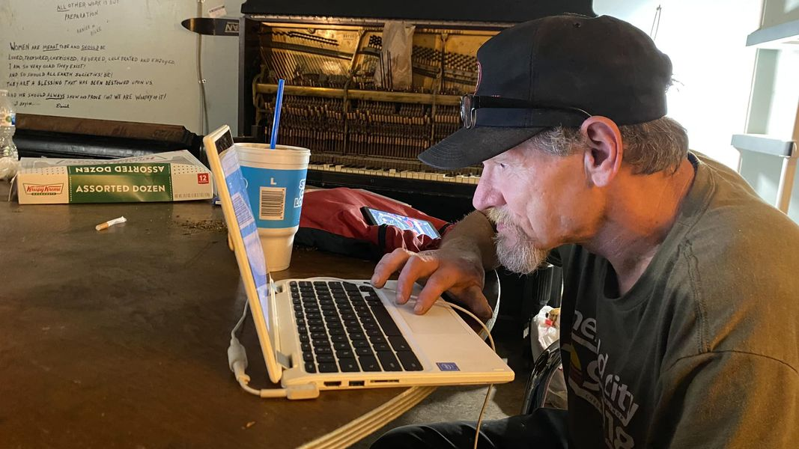

Mobile uploads
This is my friend, Sully.
He’s trying out a computer I gave him. It had been sitting on a shelf for months so I thought I’d give it a new home.
I chose to give it to Sully for many reasons. One of those reasons is that he doesn’t sell stuff I give him. Unusual items often have value to the Dope Boy. So he’ll take things like phones and computers for drugs.
Sully currently lives in a house. But it’s not a sure thing. He’s waiting on social security to kick in. But the rent for his rapid rehousing room is looming. I’ve heard this program through United Way is out of money. So it’s possible he won’t be able to afford to stay in his place.
But he also has other head winds to deal with.
I tried to help him get a Bluebird® American Express® Prepaid Debit card. He was denied.
I tried to get him an EIN number so he could start a business. He was denied.
In America your past transgressions haunt you for your entire life. And then certain segments of society blame you for giving up and going back to homelessness and drugs.
I gave him this computer because I don’t know what else to do. It all seems so hopeless.
But Sully never gets down. He never quits. He is a symbol of human hope against all odds.